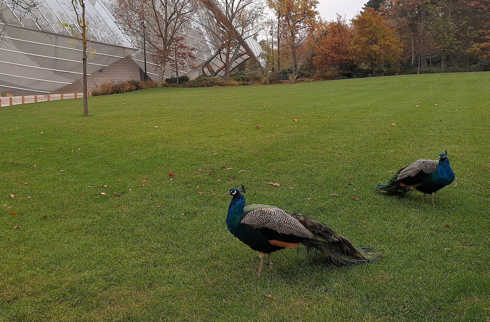

باريس
محمد الفرج في لويس فويتون: أول عرض فردي له في مؤسسة فرنسية


دليل معارض باريس لشهر أكتوبر 2026 بيذكر عرض Open Space #19 للفنان السعودي محمد الفرج في مؤسسة لويس فويتون، من 9 أكتوبر، في المعرض رقم 8. العنوان بالإنجليزية: I'd rather be a dragonfly than a lion. الدليل بيوصف العرض إنه أول عرض فردي له في مؤسسة فرنسية، وفيه فيديو ستوب موشن، وأشياء، وصور، ورسوم خارجة من الحكاية الشفهية ومن أرض الأحساء.
ليه العنوان مهم
العنوان بيقلب ترتيب القوة المعتاد: اليعسوب مش الأسد. من غير بيان الفنان نفسه، مانحوّلش الجملة لديوان فلسفي كامل. اللي نقدر نقوله إن المؤسسة بتقدم فنان من واحة الأحساء في برنامج Open Space، وإن المواد المعلنة بتمزج صورة متحركة وأشياء. تفاصيل القاعة، وأسعار التذكرة، وأي عمل بالاسم، مكانها صفحة المؤسسة لو اختلف الدليل.
صورة المقال للحديقة قدام المؤسسة، وفيها الطواويس أوضح من الواجهة. اخترناها لأن الملف مفتوح الترخيص، وأعمال الفرج المعاصرة مش ملكية عامة ومنقدرش ننسخها من البيانات الصحفية. التعليق بيقول إنها حديقة، مش قاعة.
المصادر
تواريخ المعارض ممكن تتغير. راجع صفحة الجهة قبل الزيارة.